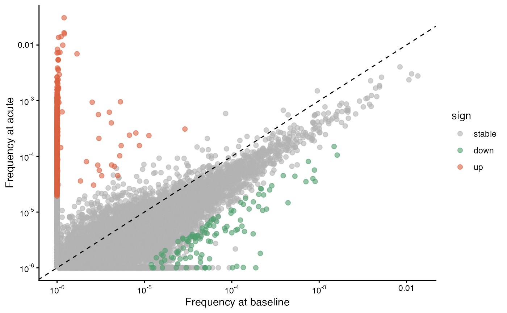
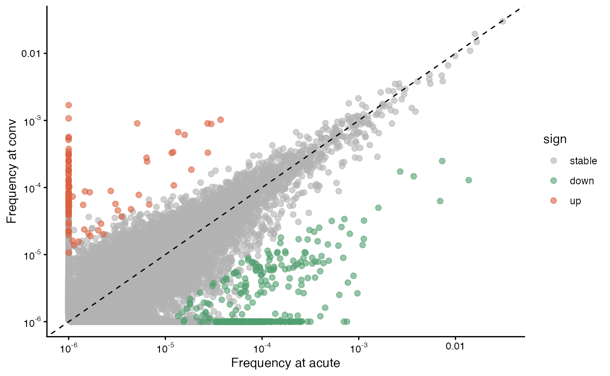
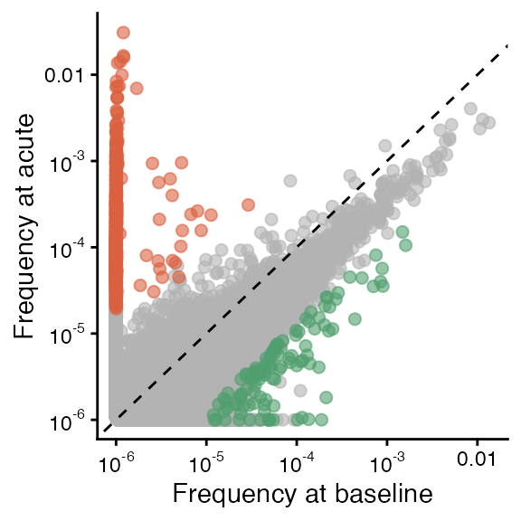
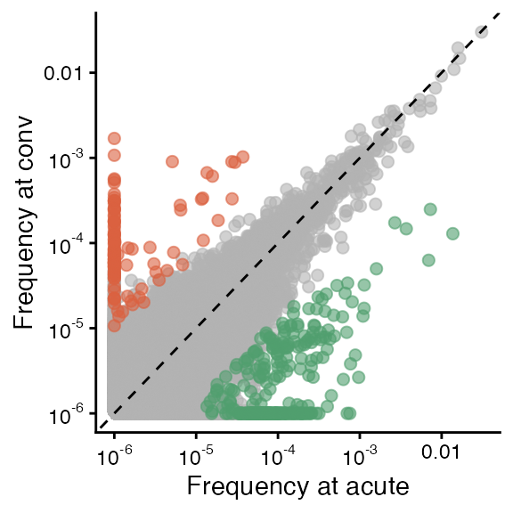

TCR-alpha/beta pairing for COVID-19 related TCRs
2025-11-24
pairing_zenodo_data.RmdTutorial overview
This vignette shows how to generate paired TCR and single-chain “pseudo-bulk” data using raw TIRTLseq TCR-alpha/beta read counts from half of a 384-well plate. We find TCR pairs for CD8+ T-cells isolated from patient samples before and after naturally acquired SARS-CoV-2 infection and re-create a figure from the TIRTLseq paper showing changes in the patient’s TCR repertoire over time.
Study details
For this example, we use data from the St. Jude Tracking Study of Immune Responses Associated with COVID-19 (SJTRC), a clinical trial launched in 2020 to study the T-cell receptor repertoires of adults with naturally acquired COVID-19. This was a prospective, longitudinal cohort study involving adult employees (18 years and older) at St. Jude Children’s Research Hospital in Memphis, TN, USA.
Participants underwent weekly PCR screening for SARS-CoV-2 infection while on the St. Jude campus. Blood samples were collected in 8-ml cell preparation tubes, processed within 24 h into cellular and plasma components, aliquoted and then frozen for future analysis.
Here, we use samples from a healthy 33-year-old female donor with
naturally acquired mild SARS-CoV-2 infection and no prior history of
SARS-CoV-2 infection or vaccination. Samples were collected 143 days
before this donor’s first positive SARS-CoV-2 PCR test
(baseline sample), 6 days after (acute sample)
and 29 days after (convalescent sample).
Instructions
Download data
You will need to download the data from Zenodo before running
this code. The data we are using is exp3_clones.tar.gz,
which includes well-level TIRTLseq data from three 384-well plates. You
will need to unzip the tar.gz file as well as the data for each
plate.
Note: These are large files. The tar.gz file is 1.4 GB and the uncompressed data is 7.8 GB.
Set up input/output directories
Change the folder locations in the following code block to the
directory with your downloaded and unzipped data (folder)
and the directory you would like to save the paired TCR output to
(save_folder).
folder = "~/Downloads/zenodo/exp3_clones/" ### change this to the directory with your downloaded data!
save_folder = "~/git/TIRTLtools/extra/exp3_cd8" ### change this to the folder you would like to save paired output in (if the folder does not exist it will be created)Select plate rows and columns
CD4+ and CD8+ T-cells were isolated from peripheral blood mononuclear cells (PBMCs) in each sample. For each timepoint, CD8+ cells were plated on the left half of wells in a 384-well plate and CD4+ cells were plated on the right half.
In this case, we will pair the CD8+ cells, so we select columns 1 through 12 (the left half of the plate) and rows 1 through 16 (or A through P, all rows).
## Loading required package: ggplot2
tp1 = file.path(folder, "TCR_clones_ID02") ## baseline (pre-infection)
tp2 = file.path(folder, "TCR_clones_ID03") ## acute (6 days after infection)
tp3 = file.path(folder, "TCR_clones_ID04") ## convalescent (29 days after infection)
cd8_wells = get_well_subset(row_range = 1:16, col_range = 1:12) ## left half of the plate (CD8+)Run pairing algorithms
The run_pairing() function will run the pairing scripts,
which implement the MAD-HYPE and T-SHELL algorithms. These algorithms
are implemented in Python using GPU-accelerated packages (with numpy as
a CPU-only backup) for fast calculation. The package should
automatically install a python environment with the necessary packages
and detect the GPU type (NVIDIA or Apple Silicon) of your machine, if it
has one available.
Each function call may take a few minutes to run.
The main arguments of the function are:
-
folder_path- the path of the folder with well-level data -
folder_out- the path of the folder to write results to (the function will create the folder if it does not exist) -
prefix- a prefix (e.g. the sample name) for the output file names -
well_filter_thres- a threshold on the number of unique clones found in a well, for quality control -
well_pos- the position of the well ID (e.g. “B5”) in the file names. -
wellset1- a vector of wells to use for the pairing.
For more information, check the documentation with
?run_pairing.
The well-level data files in each folder are named something like
MVP113_TIRTLseq_P12_S263.TCRa_ID02.clones_TRA.tsv, so the
well ID (P12 in this case) is in the third position
(separate by underscores) so we use well_pos=3. We use the
get_well_subset() function above to generate the vector of
wells for the left side of the plate. With this, we run the
run_pairing() function, saving the output from CD8+ cells
in each plate to the same folder, with a different prefix for each:
<experiment>_<timepoint>_<marker>.
### This function will attempt to automatically install a Python environment with necessary packages for GPU computation
run_pairing(folder_path = tp1, folder_out = save_folder, prefix = "exp3_tp1_cd8", well_filter_thres = 0.5,
well_pos = 3, wellset1 = cd8_wells)## [1] "start"
## [1] "2026-02-23 14:28:46 CST"
## [1] "Folder already exists: ~/git/TIRTLtools/extra/exp3_cd8"
## [1] "384 TCRalpha well files loaded"
## [1] "384 TCRalpha well files loaded"
## [1] "2026-02-23 14:29:16 CST"
## [1] "Clone threshold for QC:"
## [1] 3210
## [1] "Alpha wells passing QC:"
##
## FALSE TRUE
## 193 191
## [1] "Beta wells passing QC:"
##
## FALSE TRUE
## 193 191
## [1] "Tabulating TCRalpha pseudobulk counts"
## [1] "2026-02-23 14:29:16 CST"
## [1] "Tabulating TCRbeta pseudobulk counts"
## [1] "2026-02-23 14:29:39 CST"
## [1] "Pseudobulk done."
## [1] "2026-02-23 14:30:00 CST"
## [1] "Merging alpha clonesets..."
## [1] "Done! Unique alpha clones and wells after filtering:"
## [1] 937875 191
## [1] "2026-02-23 14:30:01 CST"
## [1] "Unique alpha clones and wells in more than: 2 wells"
## [1] 36679 191
## [1] "Done! beta clones and wells after filtering:"
## [1] 928777 191
## [1] "2026-02-23 14:30:02 CST"
## [1] "Unique beta clones and wells in more than: 2 wells"
## [1] 36080 191
## [1] "2026-02-23 14:30:02 CST"
## [1] "Pre-computing look-up table:"
## | | | 0% | | | 1% | |= | 1% | |= | 2% | |== | 3% | |=== | 4% | |=== | 5% | |==== | 5% | |==== | 6% | |===== | 7% | |===== | 8% | |====== | 8% | |====== | 9% | |======= | 9% | |======= | 10% | |======== | 11% | |======== | 12% | |========= | 13% | |========== | 14% | |========== | 15% | |=========== | 15% | |=========== | 16% | |============ | 17% | |============ | 18% | |============= | 18% | |============= | 19% | |============== | 19% | |============== | 20% | |=============== | 21% | |=============== | 22% | |================ | 23% | |================ | 24% | |================= | 24% | |================= | 25% | |================== | 25% | |================== | 26% | |=================== | 27% | |=================== | 28% | |==================== | 28% | |==================== | 29% | |===================== | 29% | |===================== | 30% | |====================== | 31% | |====================== | 32% | |======================= | 32% | |======================= | 33% | |======================= | 34% | |======================== | 34% | |======================== | 35% | |========================= | 35% | |========================= | 36% | |========================== | 37% | |========================== | 38% | |=========================== | 38% | |=========================== | 39% | |============================ | 40% | |============================= | 41% | |============================= | 42% | |============================== | 42% | |============================== | 43% | |=============================== | 44% | |=============================== | 45% | |================================ | 45% | |================================ | 46% | |================================= | 47% | |================================= | 48% | |================================== | 48% | |================================== | 49% | |=================================== | 50% | |==================================== | 51% | |==================================== | 52% | |===================================== | 52% | |===================================== | 53% | |====================================== | 54% | |====================================== | 55% | |======================================= | 55% | |======================================= | 56% | |======================================== | 57% | |======================================== | 58% | |========================================= | 58% | |========================================= | 59% | |========================================== | 60% | |=========================================== | 61% | |=========================================== | 62% | |============================================ | 62% | |============================================ | 63% | |============================================= | 64% | |============================================= | 65% | |============================================== | 65% | |============================================== | 66% | |=============================================== | 66% | |=============================================== | 67% | |=============================================== | 68% | |================================================ | 68% | |================================================ | 69% | |================================================= | 70% | |================================================= | 71% | |================================================== | 71% | |================================================== | 72% | |=================================================== | 72% | |=================================================== | 73% | |==================================================== | 74% | |==================================================== | 75% | |===================================================== | 75% | |===================================================== | 76% | |====================================================== | 76% | |====================================================== | 77% | |======================================================= | 78% | |======================================================= | 79% | |======================================================== | 80% | |======================================================== | 81% | |========================================================= | 81% | |========================================================= | 82% | |========================================================== | 82% | |========================================================== | 83% | |=========================================================== | 84% | |=========================================================== | 85% | |============================================================ | 85% | |============================================================ | 86% | |============================================================= | 87% | |============================================================== | 88% | |============================================================== | 89% | |=============================================================== | 90% | |=============================================================== | 91% | |================================================================ | 91% | |================================================================ | 92% | |================================================================= | 92% | |================================================================= | 93% | |================================================================== | 94% | |================================================================== | 95% | |=================================================================== | 95% | |=================================================================== | 96% | |==================================================================== | 97% | |===================================================================== | 98% | |===================================================================== | 99% | |======================================================================| 99% | |======================================================================| 100%
## [1] "2026-02-23 14:30:06 CST"
## [1] "Filtering results, adding amino acid and V segment information"
## [1] "Scoring unique pairs..."
## [1] "2026-02-23 14:30:35 CST"
## [1] "All is done! Number of paired clones:"
##
## madhype tshell
## 13379 7311## Key: <wi, wj, wij>
## wi wj wij alpha_nuc
## <num> <num> <num> <char>
## 1: 0 0 3 TGTGTGAGAGCCGGAGGCTTCAAAACTATCTTT
## 2: 0 0 3 TGTGTGAGAGCCGGAGGCTTCAAAACTATCTTT
## 3: 0 0 3 TGTGCAATGAGAAATCGTAGTTCCGGGTATGCACTCAACTTC
## 4: 0 0 3 TGTGCTCTGAGCCATACTGGAGGCTTCAAAACTATCTTT
## 5: 0 0 3 TGTGCTCTAATCCGCAATTCAGGAAACACACCTCTTGTCTTT
## ---
## 20686: 92 0 38 TGTGGGGGTTACCAGAAAGTTACCTTT
## 20687: 94 0 42 TGTGCTCTTGGGGAAAGGATGGACAGCTGGGGGAAATTGCAGTTT
## 20688: 97 0 56 TGTGCTCTAGAACCTGGTGGCTACAATAAGCTGATTTTT
## 20689: 98 0 49 TGTGCAATGAGTGCATCAGGAGGAAGCTACATACCTACATTT
## 20690: 101 0 53 TGTGCTCTTTACAGCAGTGCTTCCAAGATAATCTTT
## beta_nuc wa wb
## <char> <int> <int>
## 1: TGCAGTGCTACATCTCGGAGAGAGCCCTACGAGCAGTACTTC 3 3
## 2: TGCGCCAGCAGCCCCGTCTGACGAATTGGAAACACCATATATTTT 3 3
## 3: TGTGCCAGCAGTGAGACAGGGCTCTCCTACGAGCAGTACTTC 3 3
## 4: TGTGCCAGCAGCCATGATGGCTCCTACGAGCAGTACTTC 3 3
## 5: TGTGCCAGCAGCTCCGGCGAAAGAAGGTCCTACAATGAGCAGTTCTTC 3 3
## ---
## 20686: TGTGCCAGTAGTATCAACGGTTACTCCCCCGGGGAGCTGTTTTTTT 130 38
## 20687: TGTGCCAGCAGTTACACGTCCGTGGGGCGCAGCGGTGAAAAACTGTTTTTTT 136 42
## 20688: TGTGCCATCAGTGACGATGCCACCCCCAAGAGACCCAGTACTTC 153 56
## 20689: TGTGCAAGTCGCCTAGGACTAGCGGGAGAGACCCAGTACTTC 147 49
## 20690: TGCGCCAGCAGCTTGGTTCCCTCGGACAGGGCCAATCAGCCCCAGCACTTT 154 53
## alpha_nuc_seq
## <char>
## 1: TGTGTGAGAGCCGGAGGCTTCAAAACTATCTTT
## 2: TGTGTGAGAGCCGGAGGCTTCAAAACTATCTTT
## 3: TGTGCAATGAGAAATCGTAGTTCCGGGTATGCACTCAACTTC
## 4: TGTGCTCTGAGCCATACTGGAGGCTTCAAAACTATCTTT
## 5: TGTGCTCTAATCCGCAATTCAGGAAACACACCTCTTGTCTTT
## ---
## 20686: TGTGGGGGTTACCAGAAAGTTACCTTT
## 20687: TGTGCTCTTGGGGAAAGGATGGACAGCTGGGGGAAATTGCAGTTT
## 20688: TGTGCTCTAGAACCTGGTGGCTACAATAAGCTGATTTTT
## 20689: TGTGCAATGAGTGCATCAGGAGGAAGCTACATACCTACATTT
## 20690: TGTGCTCTTTACAGCAGTGCTTCCAAGATAATCTTT
## beta_nuc_seq
## <char>
## 1: TGCAGTGCTACATCTCGGAGAGAGCCCTACGAGCAGTACTTC
## 2: TGCGCCAGCAGCCCCGTCTGACGAATTGGAAACACCATATATTTT
## 3: TGTGCCAGCAGTGAGACAGGGCTCTCCTACGAGCAGTACTTC
## 4: TGTGCCAGCAGCCATGATGGCTCCTACGAGCAGTACTTC
## 5: TGTGCCAGCAGCTCCGGCGAAAGAAGGTCCTACAATGAGCAGTTCTTC
## ---
## 20686: TGTGCCAGTAGTATCAACGGTTACTCCCCCGGGGAGCTGTTTTTTT
## 20687: TGTGCCAGCAGTTACACGTCCGTGGGGCGCAGCGGTGAAAAACTGTTTTTTT
## 20688: TGTGCCATCAGTGACGATGCCACCCCCAAGAGACCCAGTACTTC
## 20689: TGTGCAAGTCGCCTAGGACTAGCGGGAGAGACCCAGTACTTC
## 20690: TGCGCCAGCAGCTTGGTTCCCTCGGACAGGGCCAATCAGCCCCAGCACTTT
## alpha_beta
## <char>
## 1: TGTGTGAGAGCCGGAGGCTTCAAAACTATCTTT_TGCAGTGCTACATCTCGGAGAGAGCCCTACGAGCAGTACTTC
## 2: TGTGTGAGAGCCGGAGGCTTCAAAACTATCTTT_TGCGCCAGCAGCCCCGTCTGACGAATTGGAAACACCATATATTTT
## 3: TGTGCAATGAGAAATCGTAGTTCCGGGTATGCACTCAACTTC_TGTGCCAGCAGTGAGACAGGGCTCTCCTACGAGCAGTACTTC
## 4: TGTGCTCTGAGCCATACTGGAGGCTTCAAAACTATCTTT_TGTGCCAGCAGCCATGATGGCTCCTACGAGCAGTACTTC
## 5: TGTGCTCTAATCCGCAATTCAGGAAACACACCTCTTGTCTTT_TGTGCCAGCAGCTCCGGCGAAAGAAGGTCCTACAATGAGCAGTTCTTC
## ---
## 20686: TGTGGGGGTTACCAGAAAGTTACCTTT_TGTGCCAGTAGTATCAACGGTTACTCCCCCGGGGAGCTGTTTTTTT
## 20687: TGTGCTCTTGGGGAAAGGATGGACAGCTGGGGGAAATTGCAGTTT_TGTGCCAGCAGTTACACGTCCGTGGGGCGCAGCGGTGAAAAACTGTTTTTTT
## 20688: TGTGCTCTAGAACCTGGTGGCTACAATAAGCTGATTTTT_TGTGCCATCAGTGACGATGCCACCCCCAAGAGACCCAGTACTTC
## 20689: TGTGCAATGAGTGCATCAGGAGGAAGCTACATACCTACATTT_TGTGCAAGTCGCCTAGGACTAGCGGGAGAGACCCAGTACTTC
## 20690: TGTGCTCTTTACAGCAGTGCTTCCAAGATAATCTTT_TGCGCCAGCAGCTTGGTTCCCTCGGACAGGGCCAATCAGCCCCAGCACTTT
## method r ts pval pval_adj loss_a_frac loss_b_frac score
## <char> <num> <num> <num> <num> <num> <num> <num>
## 1: madhype NA NA NA NA 0 0.0000000 0.6184880
## 2: madhype NA NA NA NA 0 0.0000000 0.6184880
## 3: madhype NA NA NA NA 0 0.0000000 0.6184880
## 4: madhype NA NA NA NA 0 0.0000000 0.6184880
## 5: madhype NA NA NA NA 0 0.0000000 0.6184880
## ---
## 20686: madhype NA NA NA NA 0 0.7076923 1.8528944
## 20687: madhype NA NA NA NA 0 0.6911765 1.7626683
## 20688: madhype NA NA NA NA 0 0.6339869 1.1176341
## 20689: madhype NA NA NA NA 0 0.6666667 1.1736806
## 20690: madhype NA NA NA NA 0 0.6558442 0.5082625
## cdr3a va ja cdr3b vb jb
## <char> <char> <char> <char> <char> <char>
## 1: CVRAGGFKTIF TRAV12-1 TRAJ9 CSATSRREPYEQYF TRBV20-1 TRBJ2-7
## 2: CVRAGGFKTIF TRAV12-1 TRAJ9 CASSPV*RIGNTIYF TRBV5-1 TRBJ1-3
## 3: CAMRNRSSGYALNF TRAV14/DV4 TRAJ41 CASSETGLSYEQYF TRBV25-1 TRBJ2-7
## 4: CALSHTGGFKTIF TRAV9-2 TRAJ9 CASSHDGSYEQYF TRBV3-1 TRBJ2-7
## 5: CALIRNSGNTPLVF TRAV16 TRAJ29 CASSSGERRSYNEQFF TRBV5-4 TRBJ2-1
## ---
## 20686: CGGYQKVTF TRAV12-3 TRAJ13 CASSINGY_PPGSCFF TRBV19 TRBJ2-2
## 20687: CALGERMDSWGKLQF TRDV1 TRAJ24 CASSYTSVG_AAVKNCFF TRBV6-6 TRBJ1-4
## 20688: CALEPGGYNKLIF TRAV6 TRAJ4 CAISDDA_PQETQYF TRBV10-3 TRBJ2-5
## 20689: CAMSASGGSYIPTF TRAV14/DV4 TRAJ6 CASRLGLAGETQYF TRBV12-2 TRBJ2-5
## 20690: CALYSSASKIIF TRAV6 TRAJ3 CASSLVPSDRANQPQHF TRBV5-1 TRBJ1-5
run_pairing(folder_path = tp2, folder_out = save_folder, prefix = "exp3_tp2_cd8", well_filter_thres = 0.5,
well_pos = 3, wellset1 = cd8_wells)## [1] "start"
## [1] "2026-02-23 14:30:35 CST"
## [1] "Folder already exists: ~/git/TIRTLtools/extra/exp3_cd8"
## [1] "384 TCRalpha well files loaded"
## [1] "384 TCRalpha well files loaded"
## [1] "2026-02-23 14:30:57 CST"
## [1] "Clone threshold for QC:"
## [1] 3844
## [1] "Alpha wells passing QC:"
##
## FALSE TRUE
## 193 191
## [1] "Beta wells passing QC:"
##
## FALSE TRUE
## 193 191
## [1] "Tabulating TCRalpha pseudobulk counts"
## [1] "2026-02-23 14:30:57 CST"
## [1] "Tabulating TCRbeta pseudobulk counts"
## [1] "2026-02-23 14:31:22 CST"
## [1] "Pseudobulk done."
## [1] "2026-02-23 14:31:43 CST"
## [1] "Merging alpha clonesets..."
## [1] "Done! Unique alpha clones and wells after filtering:"
## [1] 980522 191
## [1] "2026-02-23 14:31:44 CST"
## [1] "Unique alpha clones and wells in more than: 2 wells"
## [1] 58954 191
## [1] "Done! beta clones and wells after filtering:"
## [1] 895688 191
## [1] "2026-02-23 14:31:45 CST"
## [1] "Unique beta clones and wells in more than: 2 wells"
## [1] 56637 191
## [1] "2026-02-23 14:31:45 CST"
## [1] "Pre-computing look-up table:"
## | | | 0% | | | 1% | |= | 1% | |= | 2% | |== | 3% | |=== | 4% | |=== | 5% | |==== | 5% | |==== | 6% | |===== | 7% | |===== | 8% | |====== | 8% | |====== | 9% | |======= | 9% | |======= | 10% | |======== | 11% | |======== | 12% | |========= | 13% | |========== | 14% | |========== | 15% | |=========== | 15% | |=========== | 16% | |============ | 17% | |============ | 18% | |============= | 18% | |============= | 19% | |============== | 19% | |============== | 20% | |=============== | 21% | |=============== | 22% | |================ | 23% | |================ | 24% | |================= | 24% | |================= | 25% | |================== | 25% | |================== | 26% | |=================== | 27% | |=================== | 28% | |==================== | 28% | |==================== | 29% | |===================== | 29% | |===================== | 30% | |====================== | 31% | |====================== | 32% | |======================= | 32% | |======================= | 33% | |======================= | 34% | |======================== | 34% | |======================== | 35% | |========================= | 35% | |========================= | 36% | |========================== | 37% | |========================== | 38% | |=========================== | 38% | |=========================== | 39% | |============================ | 40% | |============================= | 41% | |============================= | 42% | |============================== | 42% | |============================== | 43% | |=============================== | 44% | |=============================== | 45% | |================================ | 45% | |================================ | 46% | |================================= | 47% | |================================= | 48% | |================================== | 48% | |================================== | 49% | |=================================== | 50% | |==================================== | 51% | |==================================== | 52% | |===================================== | 52% | |===================================== | 53% | |====================================== | 54% | |====================================== | 55% | |======================================= | 55% | |======================================= | 56% | |======================================== | 57% | |======================================== | 58% | |========================================= | 58% | |========================================= | 59% | |========================================== | 60% | |=========================================== | 61% | |=========================================== | 62% | |============================================ | 62% | |============================================ | 63% | |============================================= | 64% | |============================================= | 65% | |============================================== | 65% | |============================================== | 66% | |=============================================== | 66% | |=============================================== | 67% | |=============================================== | 68% | |================================================ | 68% | |================================================ | 69% | |================================================= | 70% | |================================================= | 71% | |================================================== | 71% | |================================================== | 72% | |=================================================== | 72% | |=================================================== | 73% | |==================================================== | 74% | |==================================================== | 75% | |===================================================== | 75% | |===================================================== | 76% | |====================================================== | 76% | |====================================================== | 77% | |======================================================= | 78% | |======================================================= | 79% | |======================================================== | 80% | |======================================================== | 81% | |========================================================= | 81% | |========================================================= | 82% | |========================================================== | 82% | |========================================================== | 83% | |=========================================================== | 84% | |=========================================================== | 85% | |============================================================ | 85% | |============================================================ | 86% | |============================================================= | 87% | |============================================================== | 88% | |============================================================== | 89% | |=============================================================== | 90% | |=============================================================== | 91% | |================================================================ | 91% | |================================================================ | 92% | |================================================================= | 92% | |================================================================= | 93% | |================================================================== | 94% | |================================================================== | 95% | |=================================================================== | 95% | |=================================================================== | 96% | |==================================================================== | 97% | |===================================================================== | 98% | |===================================================================== | 99% | |======================================================================| 99% | |======================================================================| 100%
## [1] "2026-02-23 14:31:49 CST"
## [1] "Filtering results, adding amino acid and V segment information"
## [1] "Scoring unique pairs..."
## [1] "2026-02-23 14:32:32 CST"
## [1] "All is done! Number of paired clones:"
##
## madhype tshell
## 16369 9891## Key: <wi, wj, wij>
## wi wj wij alpha_nuc
## <num> <num> <num> <char>
## 1: 0 0 3 TGTGCTACGGACGCGGAAACCGGCACTGCCAGTAAACTCACCTTT
## 2: 0 0 3 TGTGCTGTCTTCCTCAAAGCTGCAGGCAACAAGCTAACTTTT
## 3: 0 0 3 TGTGCTCTCCAGGGGAATAACAATGCCAGACTCATGTTT
## 4: 0 0 3 TGTGCTCTCCTCCTTGTTTCAGATGGCCAGAAGCTGCTCTTT
## 5: 0 0 3 TGTGCTGTGAGTCAGAAGAACAGAGATGACAAGATCATCTTT
## ---
## 26256: 95 0 36 TGCATCCTGAGAGAAGGGGGGAGTGACATGCGCTTT
## 26257: 97 0 31 TGTGCCGTCCTCTGGGGGGTTTCAGGAAACACACCTCTTGTCTTT
## 26258: 97 0 51 TGTGCAGAGAGGGGTGGAGGCTTCAAAACTATCTTT
## 26259: 97 0 53 TGTGTTGTGAGTGGCTTTATACTCACGGGAGGAGGAAACAAACTCACCTTT
## 26260: 98 0 46 TGTGCTCTGAGTGAGGCGAATTCAGATGGCCAGAAGCTGCTCTTT
## beta_nuc wa wb
## <char> <int> <int>
## 1: TGTGCCAGCAGCGTAGCTCTGTCAGGGGGCTTCTATGGCTACACCTTC 3 3
## 2: TGTGCCAGCAGCTTAGACGTCAGGGGCAGACACTGAAGCTTTCTTT 3 3
## 3: TGCGCCAGCAGCTTGGCCGGAGTTCACAGGACCACAGATACGCAGTATTTT 3 3
## 4: TGCGCCAGCAGCTTGGCCGGAGTTCACAGGACCACAGATACGCAGTATTTT 3 3
## 5: TGCAGCGTCCGACTAGCGGGAGAAACCGAGCAGTACTTC 3 3
## ---
## 26256: TGTGCCAGCAGCTTATGGGGGGGGGGGGACACTGAAGCTTTCTTT 131 36
## 26257: TGTGCCAGCAGTCCCCTCCCATGGGGGATGACACAGATACGCAGTATTTT 128 31
## 26258: TGCGCCAGCAGCTTGCGGGACCAGCCCTACAACGAGCAGTTCTTC 148 51
## 26259: TGTGCCAGCAGCCAAGAAGGACTAGCGGGGGGGCCTACACCGGGGAGCTGTTTTTT 150 53
## 26260: TGTGCCAGCAGTTTTTTGGGAGAACAATGAGCAGTTCTTC 144 46
## alpha_nuc_seq
## <char>
## 1: TGTGCTACGGACGCGGAAACCGGCACTGCCAGTAAACTCACCTTT
## 2: TGTGCTGTCTTCCTCAAAGCTGCAGGCAACAAGCTAACTTTT
## 3: TGTGCTCTCCAGGGGAATAACAATGCCAGACTCATGTTT
## 4: TGTGCTCTCCTCCTTGTTTCAGATGGCCAGAAGCTGCTCTTT
## 5: TGTGCTGTGAGTCAGAAGAACAGAGATGACAAGATCATCTTT
## ---
## 26256: TGCATCCTGAGAGAAGGGGGGAGTGACATGCGCTTT
## 26257: TGTGCCGTCCTCTGGGGGGTTTCAGGAAACACACCTCTTGTCTTT
## 26258: TGTGCAGAGAGGGGTGGAGGCTTCAAAACTATCTTT
## 26259: TGTGTTGTGAGTGGCTTTATACTCACGGGAGGAGGAAACAAACTCACCTTT
## 26260: TGTGCTCTGAGTGAGGCGAATTCAGATGGCCAGAAGCTGCTCTTT
## beta_nuc_seq
## <char>
## 1: TGTGCCAGCAGCGTAGCTCTGTCAGGGGGCTTCTATGGCTACACCTTC
## 2: TGTGCCAGCAGCTTAGACGTCAGGGGCAGACACTGAAGCTTTCTTT
## 3: TGCGCCAGCAGCTTGGCCGGAGTTCACAGGACCACAGATACGCAGTATTTT
## 4: TGCGCCAGCAGCTTGGCCGGAGTTCACAGGACCACAGATACGCAGTATTTT
## 5: TGCAGCGTCCGACTAGCGGGAGAAACCGAGCAGTACTTC
## ---
## 26256: TGTGCCAGCAGCTTATGGGGGGGGGGGGACACTGAAGCTTTCTTT
## 26257: TGTGCCAGCAGTCCCCTCCCATGGGGGATGACACAGATACGCAGTATTTT
## 26258: TGCGCCAGCAGCTTGCGGGACCAGCCCTACAACGAGCAGTTCTTC
## 26259: TGTGCCAGCAGCCAAGAAGGACTAGCGGGGGGGCCTACACCGGGGAGCTGTTTTTT
## 26260: TGTGCCAGCAGTTTTTTGGGAGAACAATGAGCAGTTCTTC
## alpha_beta
## <char>
## 1: TGTGCTACGGACGCGGAAACCGGCACTGCCAGTAAACTCACCTTT_TGTGCCAGCAGCGTAGCTCTGTCAGGGGGCTTCTATGGCTACACCTTC
## 2: TGTGCTGTCTTCCTCAAAGCTGCAGGCAACAAGCTAACTTTT_TGTGCCAGCAGCTTAGACGTCAGGGGCAGACACTGAAGCTTTCTTT
## 3: TGTGCTCTCCAGGGGAATAACAATGCCAGACTCATGTTT_TGCGCCAGCAGCTTGGCCGGAGTTCACAGGACCACAGATACGCAGTATTTT
## 4: TGTGCTCTCCTCCTTGTTTCAGATGGCCAGAAGCTGCTCTTT_TGCGCCAGCAGCTTGGCCGGAGTTCACAGGACCACAGATACGCAGTATTTT
## 5: TGTGCTGTGAGTCAGAAGAACAGAGATGACAAGATCATCTTT_TGCAGCGTCCGACTAGCGGGAGAAACCGAGCAGTACTTC
## ---
## 26256: TGCATCCTGAGAGAAGGGGGGAGTGACATGCGCTTT_TGTGCCAGCAGCTTATGGGGGGGGGGGGACACTGAAGCTTTCTTT
## 26257: TGTGCCGTCCTCTGGGGGGTTTCAGGAAACACACCTCTTGTCTTT_TGTGCCAGCAGTCCCCTCCCATGGGGGATGACACAGATACGCAGTATTTT
## 26258: TGTGCAGAGAGGGGTGGAGGCTTCAAAACTATCTTT_TGCGCCAGCAGCTTGCGGGACCAGCCCTACAACGAGCAGTTCTTC
## 26259: TGTGTTGTGAGTGGCTTTATACTCACGGGAGGAGGAAACAAACTCACCTTT_TGTGCCAGCAGCCAAGAAGGACTAGCGGGGGGGCCTACACCGGGGAGCTGTTTTTT
## 26260: TGTGCTCTGAGTGAGGCGAATTCAGATGGCCAGAAGCTGCTCTTT_TGTGCCAGCAGTTTTTTGGGAGAACAATGAGCAGTTCTTC
## method r ts pval pval_adj loss_a_frac loss_b_frac score
## <char> <num> <num> <num> <num> <num> <num> <num>
## 1: madhype NA NA NA NA 0 0.0000000 0.417523
## 2: madhype NA NA NA NA 0 0.0000000 0.417523
## 3: madhype NA NA NA NA 0 0.0000000 0.417523
## 4: madhype NA NA NA NA 0 0.0000000 0.417523
## 5: madhype NA NA NA NA 0 0.0000000 0.417523
## ---
## 26256: madhype NA NA NA NA 0 0.7251908 1.073628
## 26257: madhype NA NA NA NA 0 0.7578125 0.388667
## 26258: madhype NA NA NA NA 0 0.6554054 1.113315
## 26259: madhype NA NA NA NA 0 0.6466667 1.052812
## 26260: madhype NA NA NA NA 0 0.6805556 0.990934
## cdr3a va ja cdr3b vb jb
## <char> <char> <char> <char> <char> <char>
## 1: CATDAETGTASKLTF TRAV17 TRAJ44 CASSVALSGGFYGYTF TRBV9 TRBJ1-2
## 2: CAVFLKAAGNKLTF TRAV3 TRAJ17 CASSLDVR_ADTEAFF TRBV11-2 TRBJ1-1
## 3: CALQGNNNARLMF TRAV21 TRAJ31 CASSLAGVHRTTDTQYF TRBV5-1 TRBJ2-3
## 4: CALLLVSDGQKLLF TRAV6 TRAJ16 CASSLAGVHRTTDTQYF TRBV5-1 TRBJ2-3
## 5: CAVSQKNRDDKIIF TRAV8-6 TRAJ30 CSVRLAGETEQYF TRBV29-1 TRBJ2-7
## ---
## 26256: CILREGGSDMRF TRAV26-2 TRAJ43 CASSLWGGGDTEAFF TRBV7-2 TRBJ1-1
## 26257: CAVLWGVSGNTPLVF TRAV12-2 TRAJ29 CASSPLPW_DDTDTQYF TRBV12-3 TRBJ2-3
## 26258: CAERGGGFKTIF TRAV5 TRAJ9 CASSLRDQPYNEQFF TRBV5-1 TRBJ2-1
## 26259: CVVSGFILTGGGNKLTF TRAV8-2 TRAJ10 CASSQEGLA_GAYTGELFF TRBV3-1 TRBJ2-2
## 26260: CALSEANSDGQKLLF TRAV19 TRAJ16 CASSFLG_NNEQFF TRBV28 TRBJ2-1
run_pairing(folder_path = tp3, folder_out = save_folder, prefix = "exp3_tp3_cd8", well_filter_thres = 0.5,
well_pos = 3, wellset1 = cd8_wells)## [1] "start"
## [1] "2026-02-23 14:32:32 CST"
## [1] "Folder already exists: ~/git/TIRTLtools/extra/exp3_cd8"
## [1] "384 TCRalpha well files loaded"
## [1] "384 TCRalpha well files loaded"
## [1] "2026-02-23 14:32:54 CST"
## [1] "Clone threshold for QC:"
## [1] 3036
## [1] "Alpha wells passing QC:"
##
## FALSE TRUE
## 192 192
## [1] "Beta wells passing QC:"
##
## FALSE TRUE
## 192 192
## [1] "Tabulating TCRalpha pseudobulk counts"
## [1] "2026-02-23 14:32:54 CST"
## [1] "Tabulating TCRbeta pseudobulk counts"
## [1] "2026-02-23 14:33:17 CST"
## [1] "Pseudobulk done."
## [1] "2026-02-23 14:33:36 CST"
## [1] "Merging alpha clonesets..."
## [1] "Done! Unique alpha clones and wells after filtering:"
## [1] 850578 192
## [1] "2026-02-23 14:33:37 CST"
## [1] "Unique alpha clones and wells in more than: 2 wells"
## [1] 37721 192
## [1] "Done! beta clones and wells after filtering:"
## [1] 830552 192
## [1] "2026-02-23 14:33:38 CST"
## [1] "Unique beta clones and wells in more than: 2 wells"
## [1] 38382 192
## [1] "2026-02-23 14:33:38 CST"
## [1] "Pre-computing look-up table:"
## | | | 0% | | | 1% | |= | 1% | |= | 2% | |== | 3% | |=== | 4% | |=== | 5% | |==== | 5% | |==== | 6% | |===== | 7% | |===== | 8% | |====== | 8% | |====== | 9% | |======= | 9% | |======= | 10% | |======== | 11% | |======== | 12% | |========= | 12% | |========= | 13% | |========= | 14% | |========== | 14% | |========== | 15% | |=========== | 15% | |=========== | 16% | |============ | 17% | |============ | 18% | |============= | 18% | |============= | 19% | |============== | 20% | |=============== | 21% | |=============== | 22% | |================ | 22% | |================ | 23% | |================= | 24% | |================== | 25% | |================== | 26% | |=================== | 27% | |=================== | 28% | |==================== | 28% | |==================== | 29% | |===================== | 30% | |====================== | 31% | |====================== | 32% | |======================= | 32% | |======================= | 33% | |======================== | 34% | |======================== | 35% | |========================= | 35% | |========================= | 36% | |========================== | 36% | |========================== | 37% | |========================== | 38% | |=========================== | 38% | |=========================== | 39% | |============================ | 40% | |============================ | 41% | |============================= | 41% | |============================= | 42% | |============================== | 42% | |============================== | 43% | |=============================== | 44% | |=============================== | 45% | |================================ | 45% | |================================ | 46% | |================================= | 47% | |================================== | 48% | |================================== | 49% | |=================================== | 49% | |=================================== | 50% | |=================================== | 51% | |==================================== | 51% | |==================================== | 52% | |===================================== | 53% | |====================================== | 54% | |====================================== | 55% | |======================================= | 55% | |======================================= | 56% | |======================================== | 57% | |======================================== | 58% | |========================================= | 58% | |========================================= | 59% | |========================================== | 59% | |========================================== | 60% | |=========================================== | 61% | |=========================================== | 62% | |============================================ | 62% | |============================================ | 63% | |============================================ | 64% | |============================================= | 64% | |============================================= | 65% | |============================================== | 65% | |============================================== | 66% | |=============================================== | 67% | |=============================================== | 68% | |================================================ | 68% | |================================================ | 69% | |================================================= | 70% | |================================================== | 71% | |================================================== | 72% | |=================================================== | 72% | |=================================================== | 73% | |==================================================== | 74% | |==================================================== | 75% | |===================================================== | 76% | |====================================================== | 77% | |====================================================== | 78% | |======================================================= | 78% | |======================================================= | 79% | |======================================================== | 80% | |========================================================= | 81% | |========================================================= | 82% | |========================================================== | 82% | |========================================================== | 83% | |=========================================================== | 84% | |=========================================================== | 85% | |============================================================ | 85% | |============================================================ | 86% | |============================================================= | 86% | |============================================================= | 87% | |============================================================= | 88% | |============================================================== | 88% | |============================================================== | 89% | |=============================================================== | 90% | |=============================================================== | 91% | |================================================================ | 91% | |================================================================ | 92% | |================================================================= | 92% | |================================================================= | 93% | |================================================================== | 94% | |================================================================== | 95% | |=================================================================== | 95% | |=================================================================== | 96% | |==================================================================== | 97% | |===================================================================== | 98% | |===================================================================== | 99% | |======================================================================| 99% | |======================================================================| 100%
## [1] "2026-02-23 14:33:42 CST"
## [1] "Filtering results, adding amino acid and V segment information"
## [1] "Scoring unique pairs..."
## [1] "2026-02-23 14:34:09 CST"
## [1] "All is done! Number of paired clones:"
##
## madhype tshell
## 13076 7474## Key: <wi, wj, wij>
## wi wj wij alpha_nuc
## <num> <num> <num> <char>
## 1: 0 0 3 TGTGCCGTGGGCCTTACCGGCACTGCCAGTAAACTCACCTTT
## 2: 0 0 3 TTCGACAGACTCATGTTT
## 3: 0 0 3 TGTGCTGTGACCAATGGGGCAGGCAAATCAACCTTT
## 4: 0 0 3 TGTGCTGTGACCAATGGGGCAGGCAAATCAACCTTT
## 5: 0 0 3 TGTGCCGCTGTTAACAATGACATGCGCTTT
## ---
## 20546: 94 0 37 TGTGCCGTGGAGGGGGAGTCTGGTGGCTACAATAAGCTGATTTTT
## 20547: 96 0 50 TGTGCCCCCATGGATAGCAACTATCAGTTAATCTGG
## 20548: 97 0 36 TGCGCTGTGAGAGATAGGGACACCAATGCAGGCAAATCAACCTTT
## 20549: 101 0 36 TGTGCAGACGGCCCCCAAGGAAATCTCATCTTT
## 20550: 103 0 46 TGCGGCACAGAGAGTGGAGGTAGCAACTATAAACTGACATTT
## beta_nuc wa wb
## <char> <int> <int>
## 1: TGTGCCAGCAGGGGAAACAATCAGCCCCAGCATTTT 3 3
## 2: TGTGCCAGCAGTGCCGCACCAGCAAACACTGAAGCTTTCTTT 3 3
## 3: TGCGCCAGCAGCCAAGGGGGGGGGGGGGACCAAGAGACCCAGTACTTC 3 3
## 4: TGCGCCAGCAGCCAAGGGGGGGGGGGGACCAAGAGACCCAGTACTTC 3 3
## 5: TGTGCCAGCAGTGAAAACTCCTACGAGCAGTACTTC 3 3
## ---
## 20546: TGTGCCAGCAGCGCCCACGGGGAAGGGAACGAAAAACTGTTTTTTT 131 37
## 20547: TGCAGTGCTAAATTAGCGGGCGACACCGGGGAGCTGTTTTTTT 146 50
## 20548: TGTGCCAGCAGTTTTTGCGGGGGCGGGCTACGAGCAGTACTTC 133 36
## 20549: TGTGCCAGCAGTTTTTGCGGGGGCGGGCTACGAGCAGTACTTC 137 36
## 20550: TGTGCCAGCAGCTGGGACAAAACCTACGAGCAGTACTTC 149 46
## alpha_nuc_seq
## <char>
## 1: TGTGCCGTGGGCCTTACCGGCACTGCCAGTAAACTCACCTTT
## 2: TTCGACAGACTCATGTTT
## 3: TGTGCTGTGACCAATGGGGCAGGCAAATCAACCTTT
## 4: TGTGCTGTGACCAATGGGGCAGGCAAATCAACCTTT
## 5: TGTGCCGCTGTTAACAATGACATGCGCTTT
## ---
## 20546: TGTGCCGTGGAGGGGGAGTCTGGTGGCTACAATAAGCTGATTTTT
## 20547: TGTGCCCCCATGGATAGCAACTATCAGTTAATCTGG
## 20548: TGCGCTGTGAGAGATAGGGACACCAATGCAGGCAAATCAACCTTT
## 20549: TGTGCAGACGGCCCCCAAGGAAATCTCATCTTT
## 20550: TGCGGCACAGAGAGTGGAGGTAGCAACTATAAACTGACATTT
## beta_nuc_seq
## <char>
## 1: TGTGCCAGCAGGGGAAACAATCAGCCCCAGCATTTT
## 2: TGTGCCAGCAGTGCCGCACCAGCAAACACTGAAGCTTTCTTT
## 3: TGCGCCAGCAGCCAAGGGGGGGGGGGGGACCAAGAGACCCAGTACTTC
## 4: TGCGCCAGCAGCCAAGGGGGGGGGGGGACCAAGAGACCCAGTACTTC
## 5: TGTGCCAGCAGTGAAAACTCCTACGAGCAGTACTTC
## ---
## 20546: TGTGCCAGCAGCGCCCACGGGGAAGGGAACGAAAAACTGTTTTTTT
## 20547: TGCAGTGCTAAATTAGCGGGCGACACCGGGGAGCTGTTTTTTT
## 20548: TGTGCCAGCAGTTTTTGCGGGGGCGGGCTACGAGCAGTACTTC
## 20549: TGTGCCAGCAGTTTTTGCGGGGGCGGGCTACGAGCAGTACTTC
## 20550: TGTGCCAGCAGCTGGGACAAAACCTACGAGCAGTACTTC
## alpha_beta
## <char>
## 1: TGTGCCGTGGGCCTTACCGGCACTGCCAGTAAACTCACCTTT_TGTGCCAGCAGGGGAAACAATCAGCCCCAGCATTTT
## 2: TTCGACAGACTCATGTTT_TGTGCCAGCAGTGCCGCACCAGCAAACACTGAAGCTTTCTTT
## 3: TGTGCTGTGACCAATGGGGCAGGCAAATCAACCTTT_TGCGCCAGCAGCCAAGGGGGGGGGGGGGACCAAGAGACCCAGTACTTC
## 4: TGTGCTGTGACCAATGGGGCAGGCAAATCAACCTTT_TGCGCCAGCAGCCAAGGGGGGGGGGGGACCAAGAGACCCAGTACTTC
## 5: TGTGCCGCTGTTAACAATGACATGCGCTTT_TGTGCCAGCAGTGAAAACTCCTACGAGCAGTACTTC
## ---
## 20546: TGTGCCGTGGAGGGGGAGTCTGGTGGCTACAATAAGCTGATTTTT_TGTGCCAGCAGCGCCCACGGGGAAGGGAACGAAAAACTGTTTTTTT
## 20547: TGTGCCCCCATGGATAGCAACTATCAGTTAATCTGG_TGCAGTGCTAAATTAGCGGGCGACACCGGGGAGCTGTTTTTTT
## 20548: TGCGCTGTGAGAGATAGGGACACCAATGCAGGCAAATCAACCTTT_TGTGCCAGCAGTTTTTGCGGGGGCGGGCTACGAGCAGTACTTC
## 20549: TGTGCAGACGGCCCCCAAGGAAATCTCATCTTT_TGTGCCAGCAGTTTTTGCGGGGGCGGGCTACGAGCAGTACTTC
## 20550: TGCGGCACAGAGAGTGGAGGTAGCAACTATAAACTGACATTT_TGTGCCAGCAGCTGGGACAAAACCTACGAGCAGTACTTC
## method r ts pval pval_adj loss_a_frac loss_b_frac score
## <char> <num> <num> <num> <num> <num> <num> <num>
## 1: madhype NA NA NA NA 0 0.0000000 0.6057843
## 2: madhype NA NA NA NA 0 0.0000000 0.6057843
## 3: madhype NA NA NA NA 0 0.0000000 0.6057843
## 4: madhype NA NA NA NA 0 0.0000000 0.6057843
## 5: madhype NA NA NA NA 0 0.0000000 0.6057843
## ---
## 20546: madhype NA NA NA NA 0 0.7175573 1.5618088
## 20547: madhype NA NA NA NA 0 0.6575342 1.6288014
## 20548: madhype NA NA NA NA 0 0.7293233 1.0688280
## 20549: madhype NA NA NA NA 0 0.7372263 0.5297975
## 20550: madhype NA NA NA NA 0 0.6912752 0.4727439
## cdr3a va ja cdr3b vb jb
## <char> <char> <char> <char> <char> <char>
## 1: CAVGLTGTASKLTF TRAV39 TRAJ44 CASRGNNQPQHF TRBV27 TRBJ1-5
## 2: FDRLMF TRAV1-1 TRAJ31 CASSAAPANTEAFF TRBV6-4 TRBJ1-1
## 3: CAVTNGAGKSTF TRAV8-4 TRAJ27 CASSQGGGGDQETQYF TRBV4-1 TRBJ2-5
## 4: CAVTNGAGKSTF TRAV8-4 TRAJ27 CASSQGGG_DQETQYF TRBV4-1 TRBJ2-5
## 5: CAAVNNDMRF TRAV12-2 TRAJ43 CASSENSYEQYF TRBV6-1 TRBJ2-7
## ---
## 20546: CAVEGESGGYNKLIF TRAV12-2 TRAJ4 CASSAHGE_GTKNCFF TRBV9 TRBJ1-4
## 20547: CAPMDSNYQLIW TRAV1-2 TRAJ33 CSAKLAG_TPGSCFF TRBV20-1 TRBJ2-2
## 20548: CAVRDRDTNAGKSTF TRAV1-1 TRAJ27 CASSFCG_AGYEQYF TRBV28 TRBJ2-7
## 20549: CADGPQGNLIF TRAV13-2 TRAJ42 CASSFCG_AGYEQYF TRBV28 TRBJ2-7
## 20550: CGTESGGSNYKLTF TRAV30 TRAJ53 CASSWDKTYEQYF TRBV5-1 TRBJ2-7Load paired TCR data
The output from each call to run_pairing() is 3
tab-separated text files (.tsv):
-
<sample-name>_TIRTLoutput.tsv(.gz)– Paired TCRs – a table of computationally paired alpha/beta TCRs -
<sample-name>_pseudobulk_TRA.tsv(.gz)– Alpha chain “pseudo-bulk” data – a table of read count summary metrics for alpha-chains across all wells on a plate -
<sample-name>_pseudobulk_TRB.tsv(.gz)– Beta chain “pseudo-bulk” data – a table of read count summary metrics for beta-chains across all wells on a plate
The load_tirtlseq() function can be used to load all of
the data in the folder.
This function loads the data into a “list”, which can contain any type of unstructured data, with the following structure:
your_data_object (list)
├───meta (metadata dataframe)
└───data (list)
└───sample_1 (list)
├───alpha (alpha pseudobulk dataframe)
├───beta (beta pseudobulk dataframe)
└───paired (paired pseudobulk dataframe)
...
└───sample_n (list)
├───alpha (alpha pseudobulk dataframe)
├───beta (beta pseudobulk dataframe)
└───paired (paired pseudobulk dataframe)The list contains two slots.
-
meta- a data frame with sample metadata -
data- a list with data for each sample
Since we used
<experiment>_<timepoint>_<marker> for the
prefix for each set of output files, we add this in the
meta_columns argument, so that the function creates a data
frame of sample metadata with this information.
data = load_tirtlseq(save_folder, sep = "_", verbose = FALSE,
meta_columns = c("experiment", "timepoint", "marker"))## Loading files from: ~/git/TIRTLtools/extra/exp3_cd8...## Found 3 beta chain pseudo-bulk files.## Found 3 paired chain files.## Loaded 9 files from 3 samples.## 3.3 secondsPlot changes in TCR repertoire over time
After loading the data, we can use the
plot_sample_vs_sample() function to make a scatter plot of
clone frequencies between two samples.
We can re-create the top half of Figure 3B from the paper, showing clone comparisons from baseline (pre-infection) to acute (6 days post-infection) and from acute to convalescent (29 days post-infection)
gg1 = plot_sample_vs_sample(
data$data$exp3_tp1_cd8, data$data$exp3_tp2_cd8,
labelx = "Frequency at baseline", labely = "Frequency at acute",
log2fc_cutoff = 3,
sem_cutoff = 2.5,
smooth_sem = "none"
)
gg2 = plot_sample_vs_sample(
data$data$exp3_tp2_cd8, data$data$exp3_tp3_cd8,
labelx = "Frequency at acute", labely = "Frequency at conv",
log2fc_cutoff = 3,
sem_cutoff = 2.5,
smooth_sem = "none"
)
gg1 ## baseline vs. acute (top left of Fig. 3B)
gg2 ## acute vs. convalescent (top right of Fig. 3B)
Note that the objects returned by the plotting functions in the
package are almost all ggplot objects, so they can be
modified by any functions in the ggplot2 package such as
the theme() function. ggplot2 function are
loaded by default in TIRTLtools, so they are available to
the user without specifying ggplot2:: before the function
name.
Since the figures are smaller in the paper and without a legend, we can re-create that here.
gg1 + theme(legend.position = "none") ## baseline vs. acute (top left of Fig. 3B)
gg2 + theme(legend.position = "none") ## acute vs. convalescent (top right of Fig. 3B)
Find the number of expanded and contracted clones
We can also call the same function with
return_data = TRUE to get the data used to create the plot,
with read fractions, log2 fold-change, and labels for whether the clone
is expanded, contracted, or stable.
baseline_to_acute_df = plot_sample_vs_sample(data$data$exp3_tp1_cd8, data$data$exp3_tp2_cd8,
return_data = TRUE, smooth_sem = "none")
acute_to_conv_df = plot_sample_vs_sample(data$data$exp3_tp2_cd8, data$data$exp3_tp3_cd8,
return_data = TRUE, smooth_sem = "none")
baseline_to_acute_df## Key: <targetSequences, aaSeqCDR3, v, j>
## targetSequences
## <char>
## 1: CACAGCGCCGGGACACCTTATGGCTACACCTTC
## 2: CCCGAGCGGCGAGAGATCGGGTTAGAGCAGTACTTC
## 3: CCCTACTCACGGGGCTTACACTGAAGCTTTCTTT
## 4: CGCAGCAGAGGCGCAGATACGCAGTATTTT
## 5: CGCAGCGCCGGAGGGAACACTGAAGCTTTCTTT
## ---
## 44269: TTGTGCTAGTGGTTCTTGGACAGGCAATGAGCAGTTCTTC
## 44270: TTGTGCTAGTGGTTTGATAGGTCAAAACCCAAATGAGCAGTTCTTC
## 44271: TTGTGCTAGTGGTTTGGTGACTAGCGGGAGGGCGGACACCGGGGAGCTGTTTTTT
## 44272: TTTGCCAGTAGTGTTGGCAGAACTGGCTACACCTTC
## 44273: TTTGCCGCGGGACTAGCGGGTCGGGAGCAGTACTTC
## aaSeqCDR3 v j readCount.x n_wells.x
## <char> <char> <char> <num> <num>
## 1: HSAGTPYGYTF TRBV29-1 TRBJ1-2 0 0
## 2: PERREIGLEQYF TRBV19 TRBJ2-7 0 0
## 3: PYSRGL_TEAFF TRBV30 TRBJ1-1 258 11
## 4: RSRGADTQYF TRBV20-1 TRBJ2-3 18 5
## 5: RSAGGNTEAFF TRBV29-1 TRBJ1-1 0 0
## ---
## 44269: LC*WFLD_GNEQFF TRBV12-5 TRBJ2-1 148 16
## 44270: LC*WFDRS_NPNEQFF TRBV12-5 TRBJ2-1 0 0
## 44271: LC*WFGD*R_RADTGELFF TRBV12-5 TRBJ2-2 0 0
## 44272: FASSVGRTGYTF TRBV19 TRBJ1-2 0 0
## 44273: FAAGLAGREQYF TRBV4-2 TRBJ2-7 144 13
## readCount_max.x readCount_median.x sem.x readFraction.x
## <num> <num> <num> <num>
## 1: 0 0 5.627777e-06 0.000000e+00
## 2: 0 0 5.627777e-06 0.000000e+00
## 3: 37 24 8.155221e-07 2.623903e-06
## 4: 7 4 9.325517e-08 1.830630e-07
## 5: 0 0 5.627777e-06 0.000000e+00
## ---
## 44269: 28 9 3.981132e-07 1.505185e-06
## 44270: 0 0 5.627777e-06 0.000000e+00
## 44271: 0 0 5.627777e-06 0.000000e+00
## 44272: 0 0 5.627777e-06 0.000000e+00
## 44273: 21 11 3.998983e-07 1.464504e-06
## max_wells.x avg.x readCount.y n_wells.y readCount_max.y
## <num> <num> <num> <num> <num>
## 1: 0 0.000000e+00 8 6 2
## 2: 0 0.000000e+00 159 17 20
## 3: 191 2.623903e-06 48 6 11
## 4: 191 1.830630e-07 4 1 4
## 5: 0 0.000000e+00 36 6 9
## ---
## 44269: 191 1.505185e-06 64 15 7
## 44270: 0 0.000000e+00 23 5 7
## 44271: 0 0.000000e+00 108 25 14
## 44272: 0 0.000000e+00 288 13 31
## 44273: 191 1.464504e-06 11 2 7
## readCount_median.y sem.y readFraction.y max_wells.y avg.y
## <num> <num> <num> <num> <num>
## 1: 1.0 3.870094e-08 1.000851e-07 191 1.000851e-07
## 2: 9.0 5.352627e-07 1.989191e-06 191 1.989191e-06
## 3: 9.0 2.728054e-07 6.005106e-07 191 6.005106e-07
## 4: 4.0 2.211298e-06 5.004255e-08 191 5.004255e-08
## 5: 7.0 2.013660e-07 4.503830e-07 191 4.503830e-07
## ---
## 44269: 5.0 2.237762e-07 8.006808e-07 191 8.006808e-07
## 44270: 4.0 1.475716e-07 2.877447e-07 191 2.877447e-07
## 44271: 4.0 2.984159e-07 1.351149e-06 191 1.351149e-06
## 44272: 22.0 1.009929e-06 3.603064e-06 191 3.603064e-06
## 44273: 5.5 2.211298e-06 1.376170e-07 191 1.376170e-07
## log2FC sign
## <num> <char>
## 1: 0.1376151 stable
## 2: 1.5797553 stable
## 3: -1.1790120 stable
## 4: -0.1720791 stable
## 5: 0.5364339 stable
## ---
## 44269: -0.4763744 stable
## 44270: 0.3648466 stable
## 44271: 1.2333659 stable
## 44272: 2.2025944 stable
## 44273: -1.1152823 stable
acute_to_conv_df## Key: <targetSequences, aaSeqCDR3, v, j>
## targetSequences
## <char>
## 1: CACAGCGCCGGGACACCTTATGGCTACACCTTC
## 2: CCCGAGCGGCGAGAGATCGGGTTAGAGCAGTACTTC
## 3: CCCTACTCACGGGGCTTACACTGAAGCTTTCTTT
## 4: CGCAGCCCCCAGGAGGGAGGCTATGGCTACACCTTC
## 5: CGCAGCGCCGGAGGGAACACTGAAGCTTTCTTT
## ---
## 43622: TTGTGCTAGTGGTTCTTGGACAGGCAATGAGCAGTTCTTC
## 43623: TTGTGCTAGTGGTTTGATAGGTCAAAACCCAAATGAGCAGTTCTTC
## 43624: TTGTGCTAGTGGTTTGGTGACTAGCGGGAGGGCGGACACCGGGGAGCTGTTTTTT
## 43625: TTTAGCGGCAAGGGATGGTGGAATCAGCCCCAGCATTTT
## 43626: TTTGCCAGTAGTGTTGGCAGAACTGGCTACACCTTC
## aaSeqCDR3 v j readCount.x n_wells.x
## <char> <char> <char> <num> <num>
## 1: HSAGTPYGYTF TRBV29-1 TRBJ1-2 8 6
## 2: PERREIGLEQYF TRBV19 TRBJ2-7 159 17
## 3: PYSRGL_TEAFF TRBV30 TRBJ1-1 48 6
## 4: RSPQEGGYGYTF TRBV29-1 TRBJ1-2 8 3
## 5: RSAGGNTEAFF TRBV29-1 TRBJ1-1 36 6
## ---
## 43622: LC*WFLD_GNEQFF TRBV12-5 TRBJ2-1 64 15
## 43623: LC*WFDRS_NPNEQFF TRBV12-5 TRBJ2-1 23 5
## 43624: LC*WFGD*R_RADTGELFF TRBV12-5 TRBJ2-2 108 25
## 43625: FSGKGWWNQPQHF TRBV14 TRBJ1-5 0 0
## 43626: FASSVGRTGYTF TRBV19 TRBJ1-2 288 13
## readCount_max.x readCount_median.x sem.x readFraction.x
## <num> <num> <num> <num>
## 1: 2 1 3.870094e-08 1.000851e-07
## 2: 20 9 5.352627e-07 1.989191e-06
## 3: 11 9 2.728054e-07 6.005106e-07
## 4: 5 2 8.333671e-08 1.000851e-07
## 5: 9 7 2.013660e-07 4.503830e-07
## ---
## 43622: 7 5 2.237762e-07 8.006808e-07
## 43623: 7 4 1.475716e-07 2.877447e-07
## 43624: 14 4 2.984159e-07 1.351149e-06
## 43625: 0 0 2.134084e-06 0.000000e+00
## 43626: 31 22 1.009929e-06 3.603064e-06
## max_wells.x avg.x readCount.y n_wells.y readCount_max.y
## <num> <num> <num> <num> <num>
## 1: 191 1.000851e-07 0 0 0
## 2: 191 1.989191e-06 0 0 0
## 3: 191 6.005106e-07 70 2 35
## 4: 191 1.000851e-07 14 6 3
## 5: 191 4.503830e-07 15 3 12
## ---
## 43622: 191 8.006808e-07 146 19 16
## 43623: 191 2.877447e-07 25 4 10
## 43624: 191 1.351149e-06 79 14 10
## 43625: 0 0.000000e+00 95 8 18
## 43626: 191 3.603064e-06 290 14 32
## readCount_median.y sem.y readFraction.y max_wells.y avg.y
## <num> <num> <num> <num> <num>
## 1: 0.0 3.884462e-06 0.000000e+00 0 0.000000e+00
## 2: 0.0 3.884462e-06 0.000000e+00 0 0.000000e+00
## 3: 35.0 3.884462e-06 8.434052e-07 192 8.434052e-07
## 4: 2.0 6.673244e-08 1.686810e-07 192 1.686810e-07
## 5: 2.0 1.446004e-07 1.807297e-07 192 1.807297e-07
## ---
## 43622: 7.0 4.064522e-07 1.759102e-06 192 1.759102e-06
## 43623: 5.0 1.979693e-07 3.012161e-07 192 3.012161e-07
## 43624: 5.0 2.602906e-07 9.518430e-07 192 9.518430e-07
## 43625: 11.5 3.799922e-07 1.144621e-06 192 1.144621e-06
## 43626: 18.5 9.497320e-07 3.494107e-06 192 3.494107e-06
## log2FC sign
## <num> <char>
## 1: -0.13761513 stable
## 2: -1.57975527 stable
## 3: 0.20384100 stable
## 4: 0.08726611 stable
## 5: -0.29675516 stable
## ---
## 43622: 0.61565649 stable
## 43623: 0.01501407 stable
## 43624: -0.26852885 stable
## 43625: 1.10072296 stable
## 43626: -0.03455981 stable
table(baseline_to_acute_df$sign)##
## down stable up
## 113 43180 980
table(acute_to_conv_df$sign)##
## down stable up
## 321 43197 108The numbers of expanded and contracted clones match the figures from the paper, with small differences due to differing quality control settings.